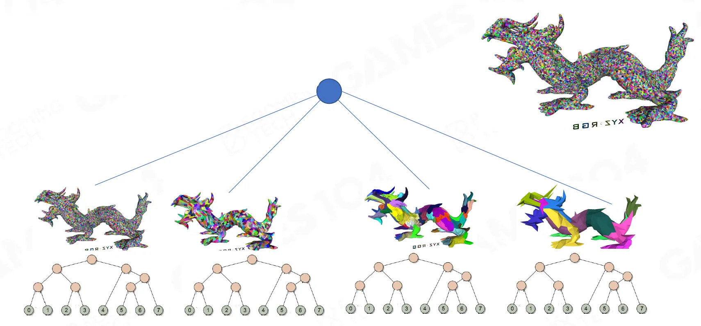

资源
- GAMES104-现代游戏引擎：从入门到实践_哔哩哔哩_bilibili
- GAMES104 - 现代游戏引擎入门必修课 (boomingtech.com)
- Piccolo 社区 - 游戏引擎爱好者的新家园 (piccoloengine.com)
- BoomingTech/Piccolo: Piccolo (formerly Pilot) – mini game engine for games104 (github.com)
- GAMES104：现代游戏引擎，从理论到实践 - 知乎 (zhihu.com)
- UE5 Nanite 原理介绍 - 知乎 (zhihu.com)
课程
“Long” Pipeline of Traditional Rendering
传统渲染的“长”管道
-
Compute unit works with graphics processor and rasterizer
计算单元与图形处理器和光栅化器配合使用
-
It’s a series of data processing units arranged in a chain like manner
它是一系列以链式方式排列的数据处理单元
-
Difficult to fully fill the GPU
很难完全填满 GPU
Jungle of Direct Draw Graphics API
直接绘制图形的丛林 API
Explosion of DrawCalls:
DrawCalls 激增：
-
Meshes x RenderStates x LoDs x Materials x Animations
网格 x 渲染状态 x LoD x 材质 x 动画
Problem 1: A traditional DrawIndexedInstanced command requires 5 arguments assigned on CPU
问题 1：传统的 DrawIndexed Instanced 命令需要在 CPU 上分配 5 个参数
Problem 2: Driver state switching overhead between amount of draw commands
问题 2：在绘制命令数量之间切换驱动程序状态的开销
Bottleneck of Traditional Rendering Pipeline
传统渲染管道的瓶颈
When rendering complicated scene with dense geometries and many materials
渲染具有密集几何体和许多材质的复杂场景时
-
High CPU overload
CPU 过载严重
-
Frustum/Occlusion Culling
颅骨/闭塞切除术
-
Prepare drawcall
准备图纸
-
GPU idle time
GPU 空闲时
-
CPU can not follow up GPU
CPU 无法跟踪 GPU
-
High driver overhead
驾驶员头顶高度
-
GPU state exchange overhead when solving large amount of drawcalls
解决大量 drawcall 时的 GPU 状态交换开销
Compute Shader - General Computation on GPU
计算着色器-GPU 上的通用计算
-
High-speed general purpose computing and takes advantage of the large numbers of parallel processors on the GPU
高速通用计算，并利用 GPU 上的大量并行处理器
-
Less overhead to graphics pipeline
减少图形管道的开销
-
Just one stage in pipeline
只是管道中的一个阶段
Draw-Indirect Graphics API
绘图-直接图形 API
Advantage:
优点：
-
Allow you to specify parameters to draw commands from a GPU buffer, or via GPU compute program
允许您指定参数以从 GPU 缓冲区或通过 GPU 计算程序绘制命令
-
“Draw-Indirect” command can merge a lot of draw calls into one single draw call, even with different mesh topology
“绘制间接”命令可以将许多绘制调用合并到一个绘制调用中，即使使用不同的网格拓扑
Notice:
注意：
-
The actual name of “Draw-Indirect” is different in each graphics platform, but they act as the same role. (e.g. vkCmdDrawIndexedIndirect(Vulkan), ExecuteIndirect(D3D12), …)
“绘制间接”的实际名称在每个图形平台中都不同，但它们扮演着相同的角色。
GPU Driven Render Pipeline – DrawPrimitive vs. DrawScene
GPU 驱动的渲染管道——DrawPrimitive 与 DrawScene
-
GPU controls what objects are actually rendered
GPU 控制实际渲染的对象
-
Lod selection, visibility culling on GPU
Lod 选择，GPU 上的可见性剔除
-
-
No CPU/GPU roundtrip
无 CPU/GPU 往返
-
CPU do not touch any GPU data
CPU 不接触任何 GPU 数据
-
-
N viewports/frustums
N 个视口/视锥
Frees up the CPU to be used on other things, ie. AI
释放 CPU 以用于其他事情
GPU Driven Pipeline in Assassins Creed
《刺客信条》中的 GPU 驱动流水线
Motivation
动机
-
Massive amounts of geometry: architecture, seamless interiors, crowds
大量的几何形状：建筑、无缝的内部、人群
Use mesh cluster rendering to
使用网格簇渲染
-
Allow much more aggressive batching and culling granularity
允许更严格的批处理和剔除粒度
-
Render different meshes efficiently with a single indirect draw command
使用单个间接绘制命令高效渲染不同的网格
Mesh Cluster Rendering
网格簇渲染
-
Require
需要
-
Fixed cluster topology (E.g. 64 triangles in Assassin Creed or 128 triangles in Nanite)
固定集群拓扑（例如，刺客信条中的 64 个三角形或 Nanite 中的 128 个三角形）
-
Split & rearrange all meshes to fit fixed topology (insert degenerate triangles)
拆分并重新排列所有网格以适应固定拓扑（插入退化三角形）
-
Fetch vertices manually in VS
在 VS 中手动获取顶点
-
-
Key Implementation
关键实施
-
Cull clusters by their bounding on GPU (usually by compute shader)
通过 GPU 上的边界（通常通过计算着色器）剔除集群
-
GPU outputs culled cluster list & drawcall args
GPU 输出精选集群列表和绘图调用参数
-
Draw arbitrary number of visible clusters in single drawcall
在单个 drawcall 中绘制任意数量的可见簇
-
GPU Driven Pipeline in Assassins Creed
《刺客信条》中的 GPU 驱动流水线
-
Overview
概述
-
Offload more work from CPU to GPU
将更多工作从 CPU 转移到 GPU
-
But not perfectly “draw scene” command, can only draw objects with the same material together
但不是完美的“绘制场景”命令，只能将具有相同材质的对象绘制在一起
-
Works on CPU side

在 CPU 端工作
-
Perform very coarse frustum culling and then batch all unculled objects together by material
执行非常粗略的截头体剔除，然后按材质将所有未剔除的对象批处理在一起
-
CPU quad tree culling
CPU 四叉树剔除
-
Drawcalls merged based on hash that build on noninstanced data:(e.g. material, renderstate, …).
基于非实例化数据构建的哈希合并的绘图调用：（例如材质、渲染状态等）。
-
-
Update per instance data(e.g. transform, LOD factor…),static instances are persistent
更新每个实例的数据（例如转换、LOD 因子等），静态实例是持久的
GPU Instance Culling
GPU 实例剔除
-
Output cluster chunks after instance culling
实例剔除后输出集群块
-
Use the cluster chunk expansion (64 cluster in a chunk) to balance GPU threads within a wavefront.
使用集群块扩展（一个块中有 64 个集群）来平衡波阵面内的 GPU 线程。
GPU Cluster Culling
GPU 集群剔除
-
Cluster culling by cluster bounding box
通过聚类边界框进行聚类剔除
-
output cluster list
输出集群列表
-
-
Triangle backface culling
三角形背面剔除
- output triangle visibility result and write offsets in new index buffer
Index Buffer Compaction
索引缓冲区压缩
-
Prepare a empty index buffer(8Mb) and per-assign space for each mesh instance
为每个网格实例准备一个空的索引缓冲区（8Mb）和每个分配的空间
-
Parallel copy the visible triangles index into the new index buffer
将可见三角形索引并行复制到新索引缓冲区中
-
Index buffer compaction and multi-draw rendering can be interleaved because of fixed size of new index buffer (8Mb)
由于新索引缓冲区的大小固定（8Mb），索引缓冲区压缩和多绘制渲染可以交错进行

Codec Triangle Visibility in Cube: Backface Culling
立方体中的编解码器三角形可见性：背面消隐
-
Bake triangle visibility for pixel frustums of cluster centered cubemap
簇中心立方体贴图像素平截头体的烘焙三角形可见性
-
Cubemap lookup based on camera
基于相机的立方体贴图查找
-
Fetch 64 bits for visibility of all triangles in cluster
获取 64 位以查看集群中所有三角形的可见性
Occlusion Culling for Camera and Shadow
相机和阴影的遮挡抑制
Occlusion Depth Generation
遮挡深度生成
-
Depth pre-pass with best occluders in full resolution
全分辨率下使用最佳封堵器进行深度预处理
-
Choose best occluders by artist or heuristic (e.g. 300 occluders)
按艺术家或启发式方法选择最佳封堵器（例如 300 个封堵器）
-
Holes can be from rejected occluder (bad occluder selection or alpha-tested geometry)
孔可能来自被拒绝的封堵器（封堵器选择不当或阿尔法测试几何形状）
-
-
Downsampled best occluders depth to 512x256
下采样最佳封堵器深度为 512x256
-
Then combined with reprojection of 1/16 low resolution version of last frame’s depth
然后结合最后一帧深度的 1/16 低分辨率版本的重新投影
-
Last frame’s depth can helped to filled with holes.
最后一帧的深度有助于填补孔洞。
-
False occlusion is possible from large moving objects in the last frame’s depth, but works in most cases.
在最后一帧的深度中，大型移动对象可能会出现假遮挡，但在大多数情况下都是有效的。
-
-
Generate hierarchy-Z buffer for GPU culling
生成用于 GPU 剔除的分层 Z-缓冲区
Two-Phase Occlusion Culling
两相闭塞消隐
1st phase
第一阶段
Cull objects & clusters using last frame’s depth pyramid
使用上一帧的深度金字塔剔除对象和簇
Render visible objects
渲染可见对象
2nd phase
第二阶段
Refresh depth pyramid
刷新深度金字塔
Test culled objects & clusters
测试剔除的物体和集群
Render false negatives
渲染假阴性
Crazy Stressing Cases
疯狂压力案例
-
“Torture” unit test scene 250,000separate moving objects
“酷刑”单元测试场景 250000 个独立移动物体
-
1GB of mesh data (10k+ meshes)
1GB 网格数据（10k+ 网格）
-
8k2 texture cache atlas
8k2 纹理缓存图集
-
DirectX 11 code path
DirectX 11 代码路径
-
64 vertex clusters (strips)
64 个顶点簇（条带）
-
No ExecuteIndirect / MultiDrawIndirect
不执行间接/多画间接
-
Only two DrawInstancedIndirect calls
只有两个 DrawInstancendirect 调用
Fast Occlusion for Shadow
快速遮挡阴影
For each cascade
对于每个级联
-
Generate camera depth reprojection (64x64 pixel)
生成相机深度重投影（64x64 像素）
-
Then combine with last frame’s shadow depth reprojection
然后结合上一帧的阴影深度重投影
-
Generate hierarchy-Z buffer for GPU culling
生成用于 GPU 剔除的分层 Z-缓冲区
Camera Depth Reprojection for Shadow Culling
用于阴影消隐的相机深度重投影
Motivation
动机
-
It is essential to cull objects in light view, which does not cast a visible shadow
在光线视角下剔除物体至关重要，因为光线视角不会投射出可见的阴影
Implementation
实施
-
Get camera visible areas that may appear shadow
获取可能出现阴影的相机可见区域
-
For each 16*16screen tile, construct a cube (each yellow frustum) according to min/max depth in this tile.
对于每个 16*16 的屏幕图块，根据该图块中的最小/最大深度构造一个立方体（每个黄色平截头体）。
-
Render max depth of these cubes in the light view
在灯光视图中渲染这些立方体的最大深度
-
All objects that far from depth can be culled because they certainly do not contribute to visible shadow
所有远离深度的物体都可以被剔除，因为它们肯定不会产生可见的阴影
Best Cases of Camera Depth Reprojection
相机深度重投影的最佳案例
Visibility Buffer
可见性缓冲区
Recap - Deferred Shading, G-Buffer
回顾-延迟着色，G-缓冲区
-
Forward rendering shades all fragments in triangle- submission order
正向渲染为三角形中的所有片段着色-提交顺序
-
Wastes rendering power on pixels that don’t contribute to the final image
在对最终图像没有贡献的像素上浪费渲染能力
-
Deferred shading solves this problem in 2steps:
延迟着色通过两个步骤解决了这个问题：
-
First, surface attributes are stored in screen buffers -> G-Buffer
首先，曲面属性存储在屏幕缓冲区 -> G-Buffer 中
-
Second, shading is computed for visible fragments only
其次，仅对可见片段计算着色
Deferred Shading
延迟渲染
Fat G-Buffer of Deferred Shading
延迟遮光的 Fat G-Buffer
-
However, deferred shading increases memory bandwidth consumption:
但是，延迟着色会增加内存带宽消耗：
-
Screen buffers for: normal, depth, albedo, material ID,…
屏幕缓冲区用于：正常、深度、反照率、材质 ID，…
-
G-Buffer size becomes challenging at high resolutions
G-缓冲区大小在高分辨率下变得具有挑战性
-
Challenges of Complex Scene
复杂场景的挑战
Visibility Buffer - Filling
可见性缓冲区-填充
-
Visibility Buffer generation step
可见性缓冲区生成步骤
-
For each pixel in screen:
对于屏幕中的每个像素：
-
Pack (alpha masked bit, drawID, primitiveID) into one 32-bit UINT
-
将（alpha 掩码位、drawID、primitiveID）打包成一个 32 位的 UINT
-
Write that into a screen-sized buffer
将其写入屏幕大小的缓冲区
-
-
The tuple (alpha masked bit, drawID, primitiveID) will allow a shader to access the triangle data in the shading step
元组（alpha 掩码位、drawID、primitiveID）将允许着色器在着色步骤中访问三角形数据
Visibility Buffer - Shading
可见性缓冲区-着色
-
For each pixel in screen-space we do:
对于屏幕空间中的每个像素，我们做：
-
Get drawID/triangleID at pixel pos
在像素位置获取 drawID/trangleID
-
Load data for the 3 vertices from the VB
从 VB 加载 3 个顶点的数据
-
Compute triangle gradients
计算三角形梯度
-
Interpolate vertex attributes at pixel pos using gradients
使用渐变在像素位置插值顶点属性
-
Attribs use w from position to compute perspective correct interpolation
属性使用 w 从位置计算透视校正插值
-
MVP matrix is applied to position
MVP 矩阵应用于定位
-
-
We have all data ready: shade and calculate final color
我们已经准备好所有数据：阴影和计算最终颜色
Pipeline of Visibility Buffer
可见性缓冲管道
Visibility Buffer + Deferred Shading
可见性缓冲区+延迟着色
Correct Texture Mipmap with Gradient Without
无渐变的正确纹理 Mipmap
Results
Total
- 8 Million Triangles
- 5 Million Vertices
Visibility Buffer
| GPU AMD RADEON R9 380 | 1080p | 1440p | 2160p |
|---|---|---|---|
| No MSAA | 8.57 | 10.72 | 15.19 |
| No MSAA – No Culling | 14.52 | 15.86 | 20.45 |
| 2x MSAA | 11.44 | 16.38 | 25.87 |
| 4x MSAA | 15.27 | 20.82 | 37.86 |
Deferred Shading
| GPU AMD RADEON R9 380 | 1080p | 1440p | 2160p |
|---|---|---|---|
| No MSAA | 9.75 | 12.30 | 20.19 |
| No MSAA – No Culling | 14.16 | 16.6 | 24.06 |
| 2x MSAA | 16.16 | 23.09 | 42.68 |
| 4x MSAA | 24.90 | 36.37 | 69.64 |
Virtual Geometry - Nanite
虚拟几何-Nanite
Challenges of Realistic Rendering
Nanite Overview
Nanite 概述
-
Overview
概述
-
Geometry Representation
几何表示法
-
Cluster-based LoD
基于集群的 LoD
-
BVH and runtime LoD
BVH 和运行时间 LoD
-
-
Rendering
渲染图
-
Software and Hardware Rasterization
软件和硬件光栅化
-
Visibility Buffer
可见性缓冲区
-
Deferred Materials
递延材质
-
Tile-based Acceleration
基于瓷砖的加速
-
-
Virtual Shadow Map
虚拟阴影贴图
-
Streaming and Compression
流媒体和压缩
Virtual Texture
虚拟纹理
-
Build a virtual indexed texture to represent all blended terrain materials for whole scene
构建一个虚拟索引纹理，以表示整个场景的所有混合地形材质
-
Only load materials data of tiles based on view depend LOD
仅加载基于视图的 LOD 的瓷砖材质数据
-
Pre-bake materials blending into tile and store them into physical textures
预烘烤材质混合到瓷砖中，并将其储存成物理纹理
The Dream
理想
-
Virtualize geometry like we did textures
像纹理一样虚拟化几何体
-
No more budgets
没有更多预算
-
Poly count
多边形计数
-
Draw calls
-
Memory
记忆
-
-
-
Directly use film quality source art
直接使用电影质量的源艺术
-
No manual optimization required
无需手动优化
-
-
No loss in quality
质量无损失
Reality
现实
-
MUCH harder than virtual texturing
比虚拟纹理硬得多
-
Not just memory management
不仅仅是内存管理
-
Geometry detail directly impacts rendering cost
几何体细节直接影响渲染成本
-
Geometry is not trivially filterable (SDF, Voxels, Point Clouds)
几何体不能轻易过滤（SDF、体素、点云）
-
Voxels?
体素？
-
Spatially uniform data distribution
空间均匀的数据分布
-
Big memory consumption
内存消耗大
-
Attribute leaking
属性泄漏
-
Not interested in completely changing all CG workflow
对完全改变所有 CG 工作流程不感兴趣
-
Support importing meshes authored anywhere
支持导入在任何地方编写的网格
-
Still have UVs and tiling detail maps
仍然有 UV 和平铺细节贴图
-
Only replacing meshes, not textures, not materials, not tools
仅替换网格，不替换纹理，不替换材质，不替换工具
-
-
Never ending list of hard problems
永无止境的难题清单
Subdivision Surfaces?
细分曲面？
-
Subdivision by definition is amplification only
根据定义，细分只是放大
-
Great for up close but doesn’t get simpler than base mesh
非常适合近距离拍摄，但不会比基础网眼更简单
-
Sometimes produces an excessive number of triangles
有时会产生过多的三角形
Maps-based Method?
基于地图的方法？
-
Works well for organic surfaces that already are uniformly sampled
适用于已经均匀取样的有机表面
-
Difficult to control hard surface features
难以控制的硬表面特征
-
Sometimes object surface is not connected
有时物体表面不连接
Point Cloud?
点云？
-
Massive amounts of overdraw
大量透支
-
Requires hole filling
需要补孔
Foundation of Computer Graphics
计算机图形学基础
-
The most elemental, atomic unit of surface area in 3D space
三维空间中最基本的原子表面积单位
-
Every surface can be turned into triangles
每个曲面都可以变成三角形
Nanite Geometry Representation
Nanite 几何表示法
Screen Pixels and Triangles
屏幕像素和三角形
-
Linear scaling in instances can be ok
实例中的线性缩放是可以的
-
Linear scaling in triangles is not ok
三角形中的线性缩放是不合适的
Why should we draw more triangles than screen pixels?
为什么我们应该绘制比屏幕像素更多的三角形？
Represent Geometry by Clusters
按簇表示几何体
View Dependent LOD Transitions – Better than AC Solutions
视图相关 LOD 转换——优于 AC 解决方案
Similar Visual Apperance with 1/30 Rendering Cost!
相似的视觉效果，渲染成本为 1/30！
Naïve Solution - Cluster LoD Hierarchy
幼稚的解决方案-集群 LoD 层次结构
-
Decide LOD on a cluster basis
基于集群确定 LOD
-
Build a hierarchy of LODs
构建 LOD 层次结构
-
Simplest is tree of clusters
最简单的是集群树
-
Parents are the simplified versions of their children
父母是孩子的简化版本
-
Naïve Solution - Decide Cluster LOD Run-time
天真的解决方案-确定集群 LOD 运行时间
-
Find cut of the tree for desired LOD
找到所需 LOD 的树木切割
-
View dependent based on perceptual difference
基于感知差异的视图依赖
Naïve Solution – Simple Streaming Idea
天真的解决方案——简单的流媒体创意
-
Entire tree doesn’t need to be in memory at once
整个树不需要一次出现在内存中
-
Can mark any cut of the tree as leaves and toss the rest
可以将树上的任何切口标记为叶子，然后扔掉剩下的
-
Request data on demand during rendering
渲染过程中按需请求数据
-
Like virtual texturing
类似于虚拟纹理
-
But, How to Handle LOD Cracks
但是，如何处理 LOD 裂缝
-
If each cluster decides LOD independent from neighbors, cracks!
如果每个集群独立于邻居决定 LOD，那么就会破裂！
-
Naive solution:
天真的解决方案：
-
Lock shared boundary edges during simplification
在简化过程中锁定共享边界边
-
Independent clusters will always match at boundaries
独立集群将始终在边界处匹配
-
Locked Boundaries? Bad Results
锁定边界？糟糕的结果
-
Collects dense cruft
收集稠密的原油
-
Especially between deep subtrees
尤其是在深子树之间
Nanite Solution - Cluster Group
Nanite 解决方案-集群集团
-
Can detect these cases during build
可以在构建过程中检测到这些情况
-
Group clusters
集团集群
-
Force them to make the same LOD decision
迫使他们做出相同的 LOD 决定
-
Now free to unlock shared edges and collapse them
现在可以自由解锁共享边并折叠它们
Build Operations
构建操作
-
Pick grouped these 4 adjacent clusters
将这 4 个相邻的集群进行分组
-
Merge and Simplify the clusters to half the number of triangles
将簇合并并简化为三角形数量的一半
-
Split simplified triangle list back into 2 new clusters
将简化的三角形列表拆分回 2 个新集群
-
We now have reduced 4 4-triangle clusters to 2 4-triangle clusters
我们现在已经将 4 个 4 三角聚类减少到 2 个 4 三角群集
-
Cluster original triangles
对原始三角形进行聚类
-
While NumClusters > 1
当 NumClusters > 1 时
-
Group clusters to clean their shared boundary
将集群分组以清理其共享边界
-
Merge triangles from group into shared list
将组中的三角形合并到共享列表中
-
Simplify to 50% the number of triangles
将三角形的数量简化到 50%
-
Split simplified triangle list into clusters (128 tris)
将简化的三角形列表拆分为簇（128 个 tris）
-
Build Clusters
构建集群
Simplification on Cluster Group
集群组的简化
Alternate Group Boundaries between Levels
级别之间的备用组边界
-
The key idea is to alternate group boundaries from level to level by grouping different clusters.
关键思想是通过对不同集群进行分组，在不同级别之间交替设置组边界。
-
A boundary in one level becomes the interior in the next level
一层中的边界成为下一层的内部
-
Locked one level, unlocked the next
锁定一个级别，解锁下一个级别
Cluster group boundaries for LoD0
LoD0 的集群组边界
Cluster group boundaries for LoD1
LoD1 的集群组边界
Cluster group boundaries for LoD2
LoD2 的集群组边界
DAG for Cluster Groups
集群组的 DAG
-
Merge and split makes this a DAG instead of a tree
合并和拆分使其成为 DAG 而不是树
-
This is a good thing in that you can’t draw a line from LOD0 all the way to the root without crossing an edge
这是一件好事，因为你不能在不穿过边的情况下从 LOD0 一直画到根部
-
Meaning there can’t be locked edges that stay locked and collect cruft
这意味着不可能有锁定的边缘保持锁定并收集碎屑
-
Why DAG, not Tree (Trap!)
为什么是 DAG，而不是树（陷阱！）
Jungle of clusters, group and their links
集群、群体及其联系的丛林
Let’s Chop the Lovely Bunny
Detail of Simplification - QEM
简化细节-QEM
Runtime LoD Selection
运行时 LoD 选择
View-Dependent LoD Selection on DAG?
DAG 上的视图相关 LoD 选择？
Group is faster than cluster, but DAG is still very complicated
组比簇快，但 DAG 仍然非常复杂
LOD Selection for Cluster Group
聚类组的 LOD 选择
-
Two submeshes with same boundary, but different LOD
具有相同边界但 LOD 不同的两个子板
-
Choose between them based on screen-space error
根据屏幕空间错误在它们之间进行选择
-
Error calculated by simplifier projected to screen
投影到屏幕上的简化器计算误差
-
Corrected for distance and angle distortion at worst-case point in sphere bounds
针对球体边界中最坏情况点的距离和角度失真进行了校正
-
-
All clusters in group must make same LOD decision
组中的所有集群都必须做出相同的 LOD 决策
-
How? Communicate? No!
怎么办？沟通？不！
-
Same input => same output
相同的输入 => 相同的输出
-
LOD Selection in Parallel
并行 LOD 选择
-
LOD selection corresponds to cutting the DAG
LOD 选择对应于切割 DAG
-
How to compute in parallel?
如何并行计算？
-
Don’t want to traverse the DAG at run-time
不想在运行时遍历 DAG
-
-
What defines the cut?
切割的定义是什么？
-
Difference between parent and child
父母和孩子的区别
-
-
Draw a cluster when:
在以下情况下绘制集群：
-
Parent error is too high && Our error is small enough
父错误太高 & 我们的错误足够小
-
Can be evaluated in parallel!
可以并行评估！
-
-
Only if there is one unique cut
只有当有一个独特的切割
-
Force error to be monotonic
力误差为单调
-
-
Parent view error >= child view error
父视图错误 >= 子视图错误
-
Careful implementation to make sure runtime correction is also monotonic
仔细实施以确保运行时校正也是单调的
Core Equation of Parallel LoD Selection for Cluster Groups
集群并行 LoD 选择的核心方程
-
When can we LOD cull a cluster?
我们什么时候可以 LOD 剔除集群？
-
Render: ParentError > threshold && ClusterError <= threshold
渲染：父错误 > 阈值 && ClusterError <= 阈值
-
Cull: ParentError <= threshold || ClusterError > threshold
-
-
Parent is already precise enough. No need to check child
家长已经足够精确了。无需检查孩子
-
ParentError <= threshold
父错误 <= 阈值
-
Tree based on ParentError, not ClusterError!
基于 ParentError 的树，而不是 ClusterError！
-
Isolated LoD Selection for Each Cluster Group
每个集群组的独立 LoD 选择
- Render: ParentError > threshold && ClusterError <= threshold
- Cull: ParentError <= threshold || ClusterError > threshold
BVH Acceleration for LoD Selection
用于 LoD 选择的 BVH 加速
Really Bad Explanation of Why and How about BVH
关于 BVH 的原因和原因的糟糕解释
-
BVH4
-
Max of children’s ParentError
儿童父母最大错误
-
Internal node: 4 children nodes
内部节点：4 个子节点
-
Leaf node: List of clusters in group
叶子节点：组中的簇列表
-
Build BVH for Acceleration of LoD Selection
构建 BVH 以加速 LoD 选择
-
7,000,000 triangles will create 110,000 clusters
7000000 个三角形将创建 110000 个簇
-
Iterating all cluster/cluster groups is too slow
迭代所有集群/集群组太慢
-
Let’s build BVH for each LoD cluster groups
让我们为每个 LoD 集群组构建 BVH

Balance BVH for 4 Nodes
平衡 4 个节点的 BVH
Detail of BVH Acceleration
-
total 110437 clusters,
总共 110437 个簇，
-
check bvh node = 107, check cluster = 4240，
检查 bvh 节点 = 107、检查簇 = 4240
-
select cluster = 2175
选择群集 = 2175
Hierarchical Culling - Naive Approach
分层剔除-朴素方法
-
Dependent DispatchIndirects
依赖视差间接
-
One per level
每层一个
-
-
Global synchronization
全局同步
-
Wait for idle between every level
在每个级别之间等待空闲
-
-
Worst case # of levels
最坏情况下的级别数量
-
Empty dispatches at the end
末尾为空调度
-
-
Can be mitigated by higher fanout
可以通过更高的扇出来缓解
-
Wasteful for small/distant objects
对小/远距离物体浪费
-
Persistent Threads
持久线程
-
Ideally
理想情况下
-
Start on child as soon as parent finished
父母一完成，就从孩子开始
-
Spawn child threads directly from compute
直接从计算中生成子线程
-
-
Persistent threads model instead
改为持久线程模型
-
Can’t spawn new threads. Reuse them instead!
无法生成新线程。重复使用它们！
-
Manage our own job queue
管理我们自己的作业队列
-
Single dispatch with enough worker threads to fill GPU
单分派，具有足够的工作线程来填充 GPU
-
Use simple multi-producer multi-consumer (MPMC) job-queue to communicate between threads
使用简单的多生产者多消费者（MPMC）作业队列在线程之间进行通信
-
Nanite Rasterization
Nanite 光栅化
Pixel Scale Detail
像素比例细节
-
Can we hit pixel scale detail with triangles > 1 pixel?
我们可以用大于 1 像素的三角形来达到像素级的细节吗？
-
Depends how smooth
取决于平滑程度
-
In general no
一般来说，没有
-
Need to draw pixel sized triangles
需要绘制像素大小的三角形

Hardware Rasterization
硬件光栅化
-
HW Rasterization unit is quad (2x2 pixels) for ddx and ddy
对于 ddx 和 ddy，HW 光栅化单元为四边形（2x2 像素）
-
Need help pixels (yellow) to form quads
需要帮助像素（黄色）来形成四边形
-
Use 4x4 tiled traversal to accelerate
使用 4x4 平铺遍历来加速
-
A lot of wasting for small triangle
小三角形浪费很多
-
tiled traversal stage is useless
平铺遍历阶段毫无用处
-
quad generate 4x pixels than its really covered
四边形产生的像素比实际覆盖的像素多 4 倍
Software Rasterization for Tiny Triangles
微小三角形的软件光栅化
-
Terrible for typical rasterizer
对于典型的光栅化器来说很糟糕
-
Typical rasterizer:
典型光栅化器：
-
Macro tile binning
宏平铺
-
Micro tile 4x4
微型瓷砖 4x4
-
Output 2x2 pixel quads
输出 2x2 像素四边形
-
Highly parallel in pixels not triangles
像素高度平行，而非三角形
-
-
Modern GPUs setup 4 tris/clock max
现代 GPU 设置最大 4 tris / 时钟
-
Outputting SV_PrimitiveID makes it even worse
输出 SV_PrimitiveID 会使情况变得更糟
-
-
Can we beat the HW rasterizer in SW?
我们能在软件中击败硬件光栅化器吗？
3x faster!
Nanite – Rasterization
Nanite-光栅化
-
Only rasterize 1 pixel when the triangle size smaller than 1 pixel in Shader function
当着色器函数中的三角形尺寸小于 1 像素时，仅光栅化 1 像素
-
We will save 3 pixels compute resources if the triangle only covered in 1 pixel
如果三角形只覆盖 1 个像素，我们将节省 3 个像素的计算资源
-
Reconstruct derivatives for ddx/ddy
重建 ddx/ddy 的导数
Scanline Software Rasterizer
扫描线软件光栅化器
-
Per-cluster based rasterization selection
基于每个集群的光栅化选择
-
All edges of cluster <18 pixels are SW rasterized
所有小于 18 像素的簇边缘都进行了 SW 光栅化
-
-
Iterate over the rect tests a lot of pixels
迭代 rect 测试大量像素
-
Best case half are covered
最好的一半都包括在内
-
Worst case none are
最坏的情况是没有
-
Scanline method is a choice
扫描线方法是一种选择
How To Do Depth Test?
如何进行深度测试？
-
Don’t have ROP or depth test hardware
没有 ROP 或深度测试硬件
-
Need Z-buffering
需要 Z-缓冲
-
Can’t serialize at tiles
无法在图块上序列化
-
Many tris may be in parallel for single tile or even single pixel
对于单个图块甚至单个像素，许多 tris 可能是并行的
-
-
Use 64 bit atomics!
使用 64 位原子！
| 32 | 25 | 7 |
|---|---|---|
| Depth 深度 |
Visible cluster index 可见集群索引 |
Triangle index 三角形索引 |
-
InterlockedMax
联锁 Max
-
Visibility buffer shows its true power
可见性缓冲显示其真正的力量
-
Nanite Visibility Buffer
Nanite 可见性缓冲区
| NumberBits | 32 | 25 | 7 |
|---|---|---|---|
| Type 类型 |
Depth 深度 |
Visible cluster index 可见集群索引 |
Triangle index 三角形索引 |
-
Write geometry data to screen
将几何数据写入屏幕
-
Depth : InstanceID : TriangleID
深度：实例 ID：三角形 ID
-
-
Material shader per pixel:
每像素材质着色器：
-
Load VisBuffer
加载 VisBuffer
-
Load instance transform
加载实例转换
-
Load 3 vert indexes
加载 3 个涵洞索引
-
Load 3 positions
加载 3 个位置
-
Transform positions to screen
将位置转换到屏幕
-
Derive barycentric coordinates for pixel
推导像素的重心坐标
-
Load and lerp attributes
加载和 lerp 属性
-
-
Sounds crazy? Not as slow as it seems
听起来很疯狂？没有看起来那么慢
-
Lots of cache hits
大量缓存命中
-
No overdraw or pixel quad inefficiencies
没有过度绘制或像素四边形效率低下
-
-
Material pass writes GBuffer
物料传递写入 GBuffer
-
Integrates with rest of our deferred shading renderer
与我们的其他延迟着色渲染器集成
-
-
Draw all opaque geometry with 1 draw
用 1 次绘制绘制所有不透明几何体
-
Completely GPU driven
完全由 GPU 驱动
-
Not just depth prepass
不仅仅是深度预付
-
Rasterize triangles once per view
每个视图对三角形进行一次栅格化
-
Hardware Rasterization
硬件光栅化
-
What about big triangles?
大三角形呢？
-
Use HW rasterizer
使用硬件光栅化器
-
Choose SW or HW per cluster
为每个集群选择软件或硬件
-
Also uses 64b atomic writes to UAV
还使用 64b 原子写入无人机
Imposters for Tiny Instances
微小实例的冒名顶替者
-
12 x 12 view directions in atlas
图集中 12 x 12 个视图方向
-
XY atlas location octahedral mapped to view direction
XY 图集位置八面体映射到视图方向
-
Dithered direction quantization
离散方向量化
-
-
12 x 12 pixels per direction
每个方向 12 x 12 像素
-
Orthogonal projection
正交投影
-
Minimal extents fit to mesh AABB
最小范围适合网眼 AABB
-
8:8 Depth, TriangleID
8:8 深度，三角形 ID
-
40.5KB per mesh always resident
每个网格始终驻留 40.5KB
-
-
Ray march to adjust parallax between directions
光线行进以调整方向之间的视差
-
Few steps needed due to small parallax
由于视差小，需要很少的步骤
-
-
Drawn directly from instance culling pass
直接从实例剔除过程中提取
-
Bypassing visible instances list
绕过可见实例列表
-
-
Would like to replace with something better
想换个更好的
Rasterizer Overdraw
光栅过冲
-
No per triangle culling
无每个三角形的剔除
-
No hardware HiZ culling pixels
无硬件 HiZ 剔除像素
-
Our software HZB is from previous frame
我们的软件 HZB 来自上一帧
-
Culls clusters not pixels
剔除聚类而非像素
-
Resolution based on cluster screen size
基于集群屏幕大小的分辨率
-
-
Excessive overdraw from:
过度透支来自：
-
Large clusters
大型集群
-
Overlapping clusters
重叠集群
-
Aggregates
骨料
-
Fast motion
快速运动
-
-
Overdraw expense
超支费用
-
Small tris: Vertex transform and triangle setup bound
小三角：顶点变换和三角形设置边界
-
Medium tris: Pixel coverage test bound
中等分辨率：像素覆盖率测试范围
-
Large tris: Atomic bound
大三体：原子束缚
-
Nanite Deferred Material
Nanite 递延材质
Deferred Material
递延材质
-
Nanite want to support full artist created pixel shaders
Nanite 希望支持完全由艺术家创建的像素着色器
-
In theory, all materials could be applied in a single pass, but there are complexities and inefficiencies there
理论上，所有材质都可以一次性使用，但存在复杂性和效率低下的问题
Material Shading
材质着色
-
Common method
常用方法
-
Draw a full screen quad per unique material
为每种独特材质绘制全屏四边形
-
Skip pixels not matching this material
跳过与此材质不匹配的像素
-
-
Disadvantages
缺点
-
CPU unaware if some materials have no visible pixels (unfortunate side effect of GPU driven)
CPU 不知道某些材质是否没有可见像素（GPU 驱动的不幸副作用）
-
So unnecessary drawing instructions will be committed
因此，将提交不必要的图纸说明
-
Shading Efficiency
遮光效率
-
Hardware depth test!
硬件深度测试！
-
Convert material ID to depth value
将材质 ID 转换为深度值
-
Shading
-
Then draw a full screen quad and set depth test function to “equal”, so unmatched pixels will be discarded
然后绘制一个全屏四边形，并将深度测试功能设置为“相等”，这样不匹配的像素将被丢弃
-
But full screen quad is not necessary and can be improved!
但全屏四屏不是必需的，可以改进！
Material Sorting with Tile-Based Rendering
基于平铺渲染的材质排序
-
We can do a screen tile material classification
我们可以做一个筛网材质分类
-
For a certain material, exclude tiles that do not contain this material
对于某种材质，排除不包含此材质的瓷砖
Material Classify
材质分类
Material Classify - Material Tile Remap Table
材质分类-材质瓷砖重绘表
-
Finally forms a material and tile remap table
最后形成材质和瓷砖重映射表
-
Get the number of tiles based on the screen resolution and pack 32 tiles into a group
根据屏幕分辨率获取图块数量，并将 32 个图块打包成一组
-
‘MaterialRemapCount’ means the number of groups
“MaterialRemapCount” 是指组的数量
-
Record the tiles in which a material is located by marking it by bit
通过逐点标记来记录材质所在的瓷砖
-
This table can be used to calculate the tile position to render to
此表可用于计算要渲染的图块位置
Deferred Material Overall Process
递延材质整体流程
-
Generate material resolve texture
生成材质解析纹理
-
Generate material depth texture
生成材质深度纹理
-
Classify screen tile materials
对筛网材质进行分类
-
Generate G-Buffer
生成 G-缓冲区
-
This will be output to the g-buffer to match with the rest of the pipeline
这将被输出到 g-buffer，以与管道的其余部分相匹配
-
Commit drawing commands per material
按材质提交绘图命令
-
1 | |
Shadows
Micropoly Level Detail for Shadows
阴影的微多层细节
Nanite Shadows - Ray Trace?
Nanite 阴影-射线追踪？
-
Ray trace?
射线追踪？
-
There are more shadow rays than primary since there are on average more than 1 light per pixel
由于每个像素平均有 1 个以上的光，因此阴影光线比主光线多
-
Custom triangle encoding
自定义三角形编码
-
No partial BVH updates
无部分 BVH 更新
-
HW triangle formats + BLAS (bottom level acceleration structure) currently are 3-7x the size of Nanite data
HW 三角形格式 + BLAS（底层加速结构）目前是 Nanite 数据大小的 3-7x
RTX 40XX，50XX? Radeon RX 70XX…?
Recap Cascaded Shadow Map
回顾级联阴影图
-
Relatively coarse LOD control
LOD 控制相对粗糙
-
If better shadow detail is desired, there is still significant memory consumption
如果需要更好的阴影细节，仍然会消耗大量内存
Sample Distribution Shadow Maps
示例分布阴影图
-
Gives a better cascaded map coverage by analysing the range of screen pixel depths
通过分析屏幕像素深度范围，提供更好的级联地图覆盖率
-
An optimized cascaded shadow map but still has coarse LOD control
优化的级联阴影贴图，但仍具有粗略的 LOD 控制
Virtual Shadow Map - A Cached Shadow System!
虚拟阴影地图-缓存的阴影系统！
-
Most lights don’t move, should be cached as much as possible
大多数灯光不会移动，应尽可能缓存
Virtual Shadow Maps
虚拟阴影地图
-
16k x 16k virtual shadow map for each light (exception, point light with 6 VSMs)
每个灯光的 16k x 16k 虚拟阴影贴图（具有 6 个 VSM 的点光源除外）
Different Light Type Shadow Maps
不同的灯光类型阴影贴图
Shadow Page Allocation
影子页面分配
-
Only visible shadow pixels need to be cached
只需要缓存可见的阴影像素
-
For each pixel on screen
对于屏幕上的每个像素
-
For all lights affecting this pixel
对于影响此像素的所有灯光
-
Project the position into shadow map space
将位置投影到阴影贴图空间
-
Pick the mip level where 1 texel matches the size of 1screen pixel
选择 1 个纹理像素与 1 个屏幕像素大小匹配的 mip 级别
-
Mark the page as needed
根据需要标记页面
-
Allocate physical page space for uncached pages
为未缓存的页面分配物理页面空间
-
Shadow Page Table and Physical Pages Pool
影子页表和物理页池
Shadow Page Cache Invalidation
卷影页缓存无效
-
Camera movement, if the movement is relatively smooth, there will not be many pages to update
相机移动，如果移动相对平稳，就不会有很多页面需要更新
-
Any light movement or rotation will invalidate all cached pages for that light
任何灯光移动或旋转都会使该灯光的所有缓存页面无效
-
Geometry that casts shadows moving, or being added or removed from the scene will invalidate any pages that overlap its bounding box from the light’s perspective
投射阴影的几何体在场景中移动、添加或删除，将使从灯光角度与其边界框重叠的任何页面无效。
-
Geometry using materials that may modify mesh positions
使用可能修改网格位置的材质的几何体
-
…
Shadow Demo
Conclusions
结论
-
Number of shadow pages proportional to screen pixels
与屏幕像素成比例的阴影页数
-
Shadow cost scales with resolution and number of lights per pixel
阴影成本随分辨率和每像素的灯光数量而变化
Streaming and Compression
流媒体和压缩
Streaming
流媒体
-
Virtualized geometry
虚拟几何体
-
Unlimited geometry at fixed memory budget
固定内存预算下的无限几何图形
-
-
Conceptually similar to virtual texturing
概念上类似于虚拟纹理
-
GPU requests needed data then CPU fulfills them.
GPU 请求所需的数据，然后 CPU 完成它们。
-
Unique challenges: must no cracks in the geometry
独特的挑战：几何体中不得有裂纹
-
-
Cut DAG at runtime to only loaded geometry
在运行时将 DAG 剪切为仅加载的几何体
-
Needs to always be a valid cut of full DAG
需要始终是完整 DAG 的有效切割
-
Similar to LOD cutting. No cracks
类似于 LOD 切割。无裂纹
-
Paging
分页
-
Fill fixed-sized pages with groups
用组填充固定大小的页面
-
Based on spatial locality to minimize pages needed at runtime
基于空间局部性，以最小化运行时所需的页面
-
Sort groups by mip and spatial locality
按 mip 和空间位置对组进行排序
-
-
Root page (64k)
根页面（64k）
-
First page contains top lod level(s) of DAG
第一页包含 DAG 的顶级 lod 级别
-
Always resident on GPU so we always have something to render
始终驻留在 GPU 上，所以我们总是有东西要渲染
-
-
Streaming Page (128k)
流媒体页面（128k）
-
Other lod levels of cluster groups
集群组的其他 lod 水平
-
Life time is managed by LRU on CPU
寿命由 CPU 上的 LRU 管理
-
-
Page contents:
页面内容：
-
Index data,Vertex data, Bounds, LOD info, Material tables, etc.
索引数据、顶点数据、边界、LOD 信息、材质表等。
-
Memory representation
内存表示
Vertex quantization and encoding
顶点量化和编码
-
Global quantization
全局量化
-
A combination of artist control and heuristics
艺术家控制和启发式的结合
-
Clusters store values in local coordinates that is relative to value min/max range
集群将值存储在相对于值最小/最大范围的局部坐标中
-
-
Per-cluster custom vertex format
每簇自定义顶点格式
-
Uses minimum number of bits per component: ceil(log2(range))
使用每个组件的最小位数：ceil(log2(range))
-
Just a string of bits, not even byte aligned
只是一串比特，甚至没有字节对齐
-
-
Decoded using GPU bit-stream reader because of divergent encode format between clusters
由于集群之间的编码格式不同，使用 GPU 比特流读取器进行解码
Disk Representation
磁盘表示法
-
Hardware LZ decompression
硬件 LZ 解压
-
In consoles now and on its way to PC with DirectStorage
现在在控制台中，并正在通过 DirectStorage 进入 PC
-
Unbeatably fast, but general purpose
速度无与伦比，但用途广泛
-
String deduplication and entropy coding
字符串重复数据删除和熵编码
-
-
For better compression
为了更好的压缩
-
Domain-specific transforms
特定于域的转换
-
Focus on redundancies not already captured by LZ and massaging the data to better fit how LZ compression
关注 LZ 尚未捕获的冗余，并对数据进行处理，以更好地适应 LZ 压缩方式
-
-
Transcode on the GPU
GPU 上的转码
-
High throughput for parallel transforms, currently runs at ~50GB/s with fairly unoptimized code on PS5
并行转换的高吞吐量，目前在 PS5 上以约 50GB/s 的速度运行，代码相当未优化
-
Powerful in combination with hardware LZ
与硬件 LZ 结合使用功能强大
-
Eventually stream data directly to GPU memory
最终将数据直接流式传输到 GPU 内存
-
Results: Lumen in the Land of Nanite
结果：Nanite 土地上的管腔
-
433M Input triangles, 882M Nanite triangles
433M 输入三角形，882M Nanite 三角形
-
Raw data: 25.90GB Memory format: 7.67GB
原始数据：25.90GB 内存格式：7.67GB
-
Compressed: 6.77GB Compressed disk format: 4.61GB
压缩：6.77GB 压缩磁盘格式：4.61GB
-
~20% improvement since Early Access
自早期访问以来提高了约 20%
-
5.6 bytes per Nanite triangle, 11.4 bytes per input triangle
每个 Nanite 三角形 5.6 个字节，每个输入三角形 11.4 个字节
-
1M triangles = ~10.9MB on disk
1M 三角形 = 磁盘上约 10.9MB
Welcome to Billions of Triangles World
欢迎来到亿万三角形世界
Jungle of Nanite Geometries
Nanite 几何丛林
References
- The Nanite 2021: https://advances.realtimerendering.com/s2021/Karis_Nanite_SIGGRAPH_Advances_2021_final
- Journey to Nanite: https://www.highperformancegraphics.org/slides22/Journey_to_Nanite
- GPU-Driven Rendering Pipelines: https://advances.realtimerendering.com/s2015/aaltonenhaar_siggraph2015_combined_final
- The Visibility Buffer: A Cache-Friendly Approach to Deferred Shading https://jcgt.org/published/0002/02/04/
- The filtered and culled Visibility Buffer: http://www.conffx.com/Visibility_Buffer_GDCE
- Optimizing the Graphics Pipeline with Compute: https://frostbite-wp-prd.s3.amazonaws.com/wpcontent/uploads/2016/03/